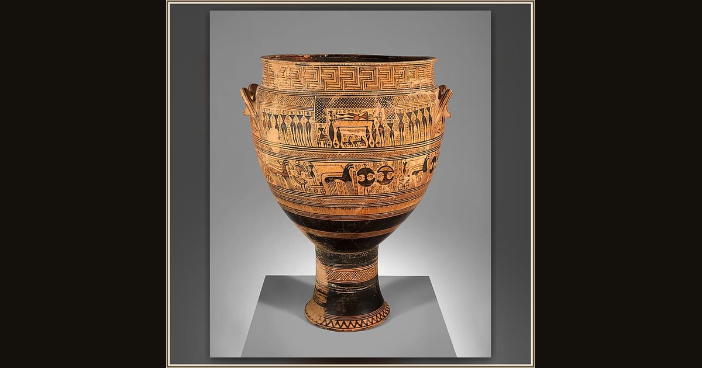

Terracotta krater
Hirschfeld Workshop · ca. 750–735 BCE · The Metropolitan Museum of Art · New York, USA
This great Geometric krater mixed wine and water and also stood over a grave, joining the poem’s feasts to its duties toward the dead. Explore its place in Book I of the Odyssey.